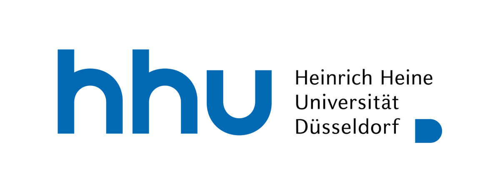
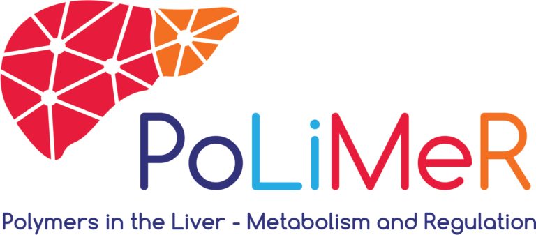
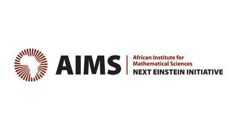
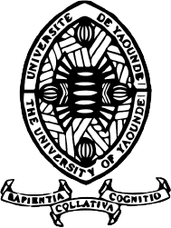

Mathematical models of T cell proliferation, with potential applications to data.
By Chilperic Armel Foko Kuate. Supervised by Prof. Wilfred Ndifon, Prof. Gisèle Mophou and Dr. Maseim Bassis Kenmoe.
Acknowledgement
Foko Lab is an independent platform by Dr. Chilperic Armel Foko Kuate. The research components are connected to earlier thesis, PhD and postdoctoral work.
Mathematical models of T cell proliferation, with potential applications to data.
By Chilperic Armel Foko Kuate. Supervised by Prof. Wilfred Ndifon, Prof. Gisèle Mophou and Dr. Maseim Bassis Kenmoe.
PhD work by Chilperic Armel Foko Kuate. Supervised by Prof. Dr. Oliver Ebenhöh, Dr. Adélaïde Raguin and Prof. Dr. Barbara Bakker.
Postdoctoral research direction led by Chilperic Armel Foko Kuate, with Yvonne Danisch, Jérémie Muller-Prokob, Prof. Dr. Martin Lercher and Antonio Rigueiro acknowledged for project-specific roles.
Independent browser-native modeling and portfolio platform designed, coded and curated by Chilperic Armel Foko Kuate.




Additional academic context includes AIMS Ghana, AIMS Cameroon / AIMS Rwanda, University of Douala, CEPLAS and computational biology groups at HHU Düsseldorf.